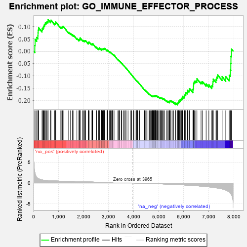
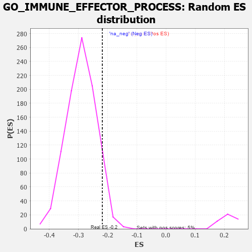

| | | Dataset | 7d |
| Phenotype | NoPhenotypeAvailable |
| Upregulated in class | na_neg |
| GeneSet | GO_IMMUNE_EFFECTOR_PROCESS |
| Enrichment Score (ES) | -0.21833049 |
| Normalized Enrichment Score (NES) | -0.7504422 |
| Nominal p-value | 0.9360587 |
| FDR q-value | 0.9983452 |
| FWER p-Value | 1.0 |
Table: GSEA Results Summary

Fig 1: Enrichment plot: GO_IMMUNE_EFFECTOR_PROCESS
Profile of the Running ES Score & Positions of GeneSet Members on the Rank Ordered List
| PROBE | GENE SYMBOL | GENE_TITLE | RANK IN GENE LIST | RANK METRIC SCORE | RUNNING ES | CORE ENRICHMENT | | 1 | TGFB3 | | | 49 | 2.654 | 0.0227 | No |
| 2 | RAC2 | | | 60 | 2.442 | 0.0481 | No |
| 3 | GLB1 | | | 125 | 1.416 | 0.0553 | No |
| 4 | DGAT1 | | | 171 | 1.146 | 0.0621 | No |
| 5 | FOXF1 | | | 176 | 1.136 | 0.0740 | No |
| 6 | PYGB | | | 183 | 1.114 | 0.0854 | No |
| 7 | BCL3 | | | 202 | 1.047 | 0.0945 | No |
| 8 | DLL1 | | | 337 | 0.760 | 0.0856 | No |
| 9 | CNOT7 | | | 348 | 0.750 | 0.0925 | No |
| 10 | PLD1 | | | 381 | 0.716 | 0.0962 | No |
| 11 | NBN | | | 405 | 0.696 | 0.1008 | No |
| 12 | MLH1 | | | 423 | 0.679 | 0.1061 | No |
| 13 | ERCC1 | | | 453 | 0.660 | 0.1095 | No |
| 14 | LRP1 | | | 470 | 0.648 | 0.1146 | No |
| 15 | THOC1 | | | 507 | 0.627 | 0.1168 | No |
| 16 | PKN1 | | | 535 | 0.619 | 0.1201 | No |
| 17 | MX1 | | | 578 | 0.604 | 0.1213 | No |
| 18 | ILF2 | | | 579 | 0.603 | 0.1278 | No |
| 19 | FAF2 | | | 680 | 0.566 | 0.1212 | No |
| 20 | XRCC6 | | | 694 | 0.560 | 0.1256 | No |
| 21 | PPIE | | | 842 | 0.521 | 0.1124 | No |
| 22 | TTC4 | | | 873 | 0.513 | 0.1141 | No |
| 23 | PYGL | | | 882 | 0.510 | 0.1187 | No |
| 24 | NCBP3 | | | 1087 | 0.466 | 0.0975 | No |
| 25 | SRC | | | 1128 | 0.459 | 0.0974 | No |
| 26 | PSMD7 | | | 1152 | 0.454 | 0.0994 | No |
| 27 | PSMD2 | | | 1181 | 0.450 | 0.1007 | No |
| 28 | EXOC1 | | | 1403 | 0.409 | 0.0767 | No |
| 29 | TIMP2 | | | 1478 | 0.394 | 0.0715 | No |
| 30 | QSOX1 | | | 1550 | 0.382 | 0.0665 | No |
| 31 | SRP14 | | | 1606 | 0.373 | 0.0635 | No |
| 32 | KMT2E | | | 1730 | 0.350 | 0.0515 | No |
| 33 | ABR | | | 1812 | 0.335 | 0.0447 | No |
| 34 | MSH2 | | | 1819 | 0.334 | 0.0476 | No |
| 35 | TRIM5 | | | 1852 | 0.327 | 0.0470 | No |
| 36 | AP1M1 | | | 1853 | 0.327 | 0.0506 | No |
| 37 | PSMD6 | | | 1858 | 0.326 | 0.0537 | No |
| 38 | ARMC8 | | | 1961 | 0.312 | 0.0439 | No |
| 39 | EXO1 | | | 2002 | 0.304 | 0.0421 | No |
| 40 | HMCES | | | 2036 | 0.300 | 0.0411 | No |
| 41 | IRF4 | | | 2054 | 0.298 | 0.0422 | No |
| 42 | LRRC7 | | | 2080 | 0.294 | 0.0422 | No |
| 43 | SYK | | | 2186 | 0.278 | 0.0317 | No |
| 44 | C1QBP | | | 2189 | 0.278 | 0.0345 | No |
| 45 | ATAD5 | | | 2197 | 0.277 | 0.0366 | No |
| 46 | MLEC | | | 2221 | 0.273 | 0.0367 | No |
| 47 | YPEL5 | | | 2302 | 0.259 | 0.0292 | No |
| 48 | ANO6 | | | 2339 | 0.255 | 0.0273 | No |
| 49 | MIF | | | 2357 | 0.252 | 0.0279 | No |
| 50 | SIN3A | | | 2361 | 0.251 | 0.0303 | No |
| 51 | HUWE1 | | | 2506 | 0.225 | 0.0142 | No |
| 52 | MANBA | | | 2514 | 0.225 | 0.0157 | No |
| 53 | QPCT | | | 2591 | 0.215 | 0.0083 | No |
| 54 | PDE12 | | | 2608 | 0.211 | 0.0085 | No |
| 55 | VAV3 | | | 2614 | 0.210 | 0.0102 | No |
| 56 | PUM2 | | | 2627 | 0.209 | 0.0109 | No |
| 57 | ABCF3 | | | 2628 | 0.209 | 0.0132 | No |
| 58 | CLPB | | | 2706 | 0.198 | 0.0055 | No |
| 59 | PHB2 | | | 2712 | 0.197 | 0.0070 | No |
| 60 | DDX1 | | | 2718 | 0.196 | 0.0085 | No |
| 61 | RORA | | | 2730 | 0.193 | 0.0092 | No |
| 62 | PPIA | | | 2754 | 0.190 | 0.0083 | No |
| 63 | MAGT1 | | | 2780 | 0.186 | 0.0071 | No |
| 64 | NSD2 | | | 2784 | 0.185 | 0.0087 | No |
| 65 | FER | | | 2803 | 0.183 | 0.0084 | No |
| 66 | BRK1 | | | 2805 | 0.183 | 0.0103 | No |
| 67 | BECN1 | | | 2828 | 0.179 | 0.0094 | No |
| 68 | PA2G4 | | | 2840 | 0.177 | 0.0099 | No |
| 69 | CAND1 | | | 2845 | 0.177 | 0.0114 | No |
| 70 | CPN2 | | | 2936 | 0.160 | 0.0015 | No |
| 71 | CDK13 | | | 2944 | 0.158 | 0.0024 | No |
| 72 | RAB10 | | | 2952 | 0.157 | 0.0032 | No |
| 73 | BTK | | | 2958 | 0.156 | 0.0042 | No |
| 74 | LEF1 | | | 3037 | 0.144 | -0.0042 | No |
| 75 | ABCE1 | | | 3051 | 0.143 | -0.0043 | No |
| 76 | PROS1 | | | 3070 | 0.141 | -0.0051 | No |
| 77 | AIMP1 | | | 3105 | 0.136 | -0.0080 | No |
| 78 | ACLY | | | 3149 | 0.130 | -0.0121 | No |
| 79 | RAB4B | | | 3157 | 0.129 | -0.0116 | No |
| 80 | AP1G1 | | | 3210 | 0.121 | -0.0170 | No |
| 81 | PRDX4 | | | 3214 | 0.120 | -0.0161 | No |
| 82 | SMAD7 | | | 3369 | 0.093 | -0.0349 | No |
| 83 | DDX3X | | | 3388 | 0.091 | -0.0362 | No |
| 84 | TRIL | | | 3428 | 0.087 | -0.0403 | No |
| 85 | AP2A2 | | | 3433 | 0.085 | -0.0399 | No |
| 86 | FES | | | 3501 | 0.077 | -0.0476 | No |
| 87 | PQBP1 | | | 3526 | 0.072 | -0.0499 | No |
| 88 | MAPK3 | | | 3589 | 0.062 | -0.0572 | No |
| 89 | CBL | | | 3621 | 0.056 | -0.0606 | No |
| 90 | CD180 | | | 3686 | 0.046 | -0.0684 | No |
| 91 | DHX9 | | | 3693 | 0.044 | -0.0687 | No |
| 92 | SBNO2 | | | 3774 | 0.032 | -0.0786 | No |
| 93 | RAB18 | | | 3886 | 0.013 | -0.0928 | No |
| 94 | IFIH1 | | | 3919 | 0.006 | -0.0968 | No |
| 95 | UBR4 | | | 3992 | -0.006 | -0.1060 | No |
| 96 | DDX58 | | | 3998 | -0.007 | -0.1066 | No |
| 97 | PDXK | | | 4054 | -0.016 | -0.1135 | No |
| 98 | MTOR | | | 4114 | -0.025 | -0.1208 | No |
| 99 | ABL1 | | | 4125 | -0.027 | -0.1218 | No |
| 100 | MSH6 | | | 4129 | -0.028 | -0.1219 | No |
| 101 | CRK | | | 4139 | -0.031 | -0.1227 | No |
| 102 | STX7 | | | 4147 | -0.033 | -0.1232 | No |
| 103 | DDX17 | | | 4161 | -0.035 | -0.1245 | No |
| 104 | GBF1 | | | 4215 | -0.044 | -0.1309 | No |
| 105 | ARPC2 | | | 4232 | -0.047 | -0.1324 | No |
| 106 | GCNT3 | | | 4432 | -0.082 | -0.1571 | No |
| 107 | SETD2 | | | 4443 | -0.084 | -0.1575 | No |
| 108 | ERP44 | | | 4482 | -0.091 | -0.1614 | No |
| 109 | NPC2 | | | 4498 | -0.093 | -0.1623 | No |
| 110 | PLPP4 | | | 4533 | -0.101 | -0.1656 | No |
| 111 | GATA3 | | | 4614 | -0.120 | -0.1746 | No |
| 112 | BRI3 | | | 4635 | -0.125 | -0.1758 | No |
| 113 | ARPC3 | | | 4659 | -0.129 | -0.1773 | No |
| 114 | LIMK1 | | | 4684 | -0.136 | -0.1789 | No |
| 115 | RAP1B | | | 4706 | -0.140 | -0.1801 | No |
| 116 | DEGS1 | | | 4747 | -0.148 | -0.1836 | No |
| 117 | RAB5C | | | 4752 | -0.149 | -0.1825 | No |
| 118 | PLCG1 | | | 4770 | -0.151 | -0.1831 | No |
| 119 | RAB14 | | | 4784 | -0.155 | -0.1830 | No |
| 120 | ITFG2 | | | 4796 | -0.156 | -0.1827 | No |
| 121 | PLCL2 | | | 4807 | -0.159 | -0.1823 | No |
| 122 | WDR1 | | | 4824 | -0.163 | -0.1826 | No |
| 123 | CNN2 | | | 4828 | -0.163 | -0.1812 | No |
| 124 | DLG1 | | | 4860 | -0.169 | -0.1833 | No |
| 125 | OSTF1 | | | 4864 | -0.170 | -0.1818 | No |
| 126 | RAB24 | | | 4868 | -0.171 | -0.1804 | No |
| 127 | CLU | | | 4889 | -0.174 | -0.1810 | No |
| 128 | VAMP8 | | | 4905 | -0.179 | -0.1810 | No |
| 129 | XRCC5 | | | 4946 | -0.187 | -0.1841 | No |
| 130 | PRKDC | | | 4955 | -0.189 | -0.1831 | No |
| 131 | AOC1 | | | 4993 | -0.197 | -0.1857 | No |
| 132 | PDPK1 | | | 5043 | -0.207 | -0.1897 | No |
| 133 | DDX41 | | | 5058 | -0.211 | -0.1892 | No |
| 134 | RAP2C | | | 5073 | -0.218 | -0.1887 | No |
| 135 | MMP9 | | | 5108 | -0.227 | -0.1905 | No |
| 136 | STK10 | | | 5130 | -0.233 | -0.1907 | No |
| 137 | KCMF1 | | | 5160 | -0.239 | -0.1918 | No |
| 138 | ENPP4 | | | 5189 | -0.245 | -0.1927 | No |
| 139 | DDX21 | | | 5231 | -0.252 | -0.1953 | No |
| 140 | RAB7A | | | 5302 | -0.271 | -0.2013 | No |
| 141 | ELMO2 | | | 5341 | -0.283 | -0.2031 | No |
| 142 | FZD5 | | | 5386 | -0.292 | -0.2056 | No |
| 143 | PPM1B | | | 5422 | -0.300 | -0.2068 | No |
| 144 | IST1 | | | 5442 | -0.305 | -0.2059 | No |
| 145 | LYST | | | 5448 | -0.307 | -0.2032 | No |
| 146 | FRK | | | 5451 | -0.307 | -0.2001 | No |
| 147 | RAB9B | | | 5489 | -0.316 | -0.2014 | No |
| 148 | PCBP2 | | | 5539 | -0.331 | -0.2041 | No |
| 149 | PGM1 | | | 5593 | -0.342 | -0.2072 | No |
| 150 | PSMD1 | | | 5674 | -0.367 | -0.2135 | No |
| 151 | CD63 | | | 5680 | -0.370 | -0.2101 | No |
| 152 | MX2 | | | 5745 | -0.390 | -0.2141 | Yes |
| 153 | TLR2 | | | 5761 | -0.395 | -0.2117 | Yes |
| 154 | VAMP7 | | | 5777 | -0.399 | -0.2093 | Yes |
| 155 | LAMP1 | | | 5796 | -0.404 | -0.2072 | Yes |
| 156 | ADA | | | 5798 | -0.405 | -0.2029 | Yes |
| 157 | SNX4 | | | 5834 | -0.415 | -0.2028 | Yes |
| 158 | TKFC | | | 5854 | -0.419 | -0.2007 | Yes |
| 159 | ATG7 | | | 5858 | -0.420 | -0.1965 | Yes |
| 160 | ARPC4 | | | 5886 | -0.430 | -0.1953 | Yes |
| 161 | DOCK1 | | | 5908 | -0.438 | -0.1932 | Yes |
| 162 | CAP1 | | | 5935 | -0.447 | -0.1916 | Yes |
| 163 | VAPA | | | 5939 | -0.449 | -0.1871 | Yes |
| 164 | SURF4 | | | 5951 | -0.455 | -0.1836 | Yes |
| 165 | XBP1 | | | 6011 | -0.475 | -0.1860 | Yes |
| 166 | HVCN1 | | | 6034 | -0.482 | -0.1835 | Yes |
| 167 | RAC1 | | | 6036 | -0.484 | -0.1784 | Yes |
| 168 | JAG1 | | | 6060 | -0.494 | -0.1759 | Yes |
| 169 | DBNL | | | 6084 | -0.501 | -0.1734 | Yes |
| 170 | MMP25 | | | 6086 | -0.501 | -0.1681 | Yes |
| 171 | PGM2 | | | 6137 | -0.515 | -0.1689 | Yes |
| 172 | RNF8 | | | 6147 | -0.518 | -0.1644 | Yes |
| 173 | ROCK1 | | | 6152 | -0.520 | -0.1592 | Yes |
| 174 | GYG1 | | | 6210 | -0.539 | -0.1606 | Yes |
| 175 | MVP | | | 6223 | -0.543 | -0.1562 | Yes |
| 176 | CDC42 | | | 6236 | -0.548 | -0.1518 | Yes |
| 177 | NIT2 | | | 6365 | -0.603 | -0.1617 | Yes |
| 178 | BIRC3 | | | 6366 | -0.603 | -0.1551 | Yes |
| 179 | ISG15 | | | 6385 | -0.608 | -0.1508 | Yes |
| 180 | TRPM4 | | | 6390 | -0.612 | -0.1446 | Yes |
| 181 | APEH | | | 6393 | -0.613 | -0.1382 | Yes |
| 182 | PRDX6 | | | 6396 | -0.615 | -0.1317 | Yes |
| 183 | MBL2 | | | 6411 | -0.623 | -0.1267 | Yes |
| 184 | MALT1 | | | 6432 | -0.634 | -0.1223 | Yes |
| 185 | DYSF | | | 6481 | -0.654 | -0.1214 | Yes |
| 186 | VAMP2 | | | 6525 | -0.672 | -0.1196 | Yes |
| 187 | ACE | | | 6526 | -0.674 | -0.1122 | Yes |
| 188 | PAK1 | | | 6691 | -0.757 | -0.1250 | Yes |
| 189 | DOK3 | | | 6751 | -0.786 | -0.1240 | Yes |
| 190 | HEXB | | | 6894 | -0.864 | -0.1329 | Yes |
| 191 | CCR2 | | | 7003 | -0.939 | -0.1365 | Yes |
| 192 | PTPRB | | | 7122 | -1.010 | -0.1407 | Yes |
| 193 | UFD1 | | | 7157 | -1.040 | -0.1337 | Yes |
| 194 | COTL1 | | | 7166 | -1.046 | -0.1233 | Yes |
| 195 | PTPRJ | | | 7180 | -1.054 | -0.1134 | Yes |
| 196 | PARP3 | | | 7289 | -1.158 | -0.1147 | Yes |
| 197 | GRN | | | 7319 | -1.194 | -0.1054 | Yes |
| 198 | PLAC8 | | | 7355 | -1.223 | -0.0965 | Yes |
| 199 | CD22 | | | 7534 | -1.449 | -0.1036 | Yes |
| 200 | TRPM2 | | | 7680 | -1.712 | -0.1035 | Yes |
| 201 | TRAF6 | | | 7818 | -2.157 | -0.0976 | Yes |
| 202 | TRAF2 | | | 7861 | -2.481 | -0.0759 | Yes |
| 203 | FYN | | | 7881 | -2.622 | -0.0497 | Yes |
| 204 | TRAF3 | | | 7886 | -2.695 | -0.0207 | Yes |
| 205 | PSMD3 | | | 7907 | -2.887 | 0.0082 | Yes |
Table: GSEA details [plain text format]

Fig 2: GO_IMMUNE_EFFECTOR_PROCESS: Random ES distribution
Gene set null distribution of ES for GO_IMMUNE_EFFECTOR_PROCESS